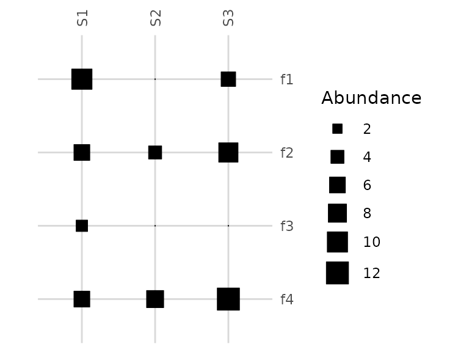
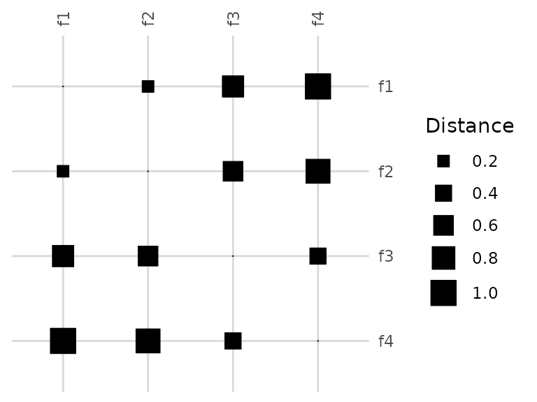
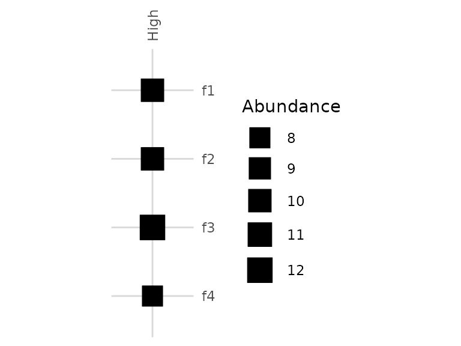
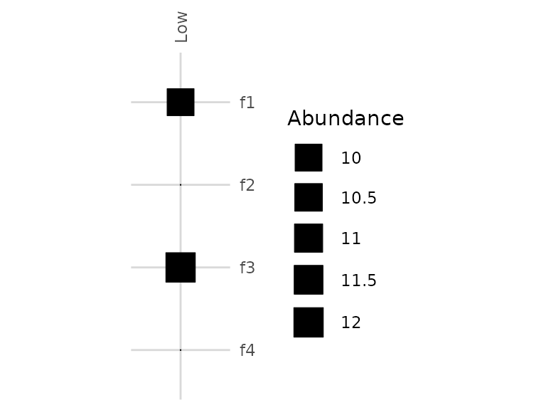

Introduction to divermeta
Felipe González-Casabianca, Vladimir Mikryukov
2025-12-20
Source:vignettes/divermeta.Rmd
divermeta.RmdIntroduction
divermeta computes multiplicity, the metric that
quantifies within‑cluster diversity that is typically neglected when
elements are grouped into units (e.g., genes into homolog groups, ASVs
into OTUs, etc.).
The core funcion of the package is divermeta(), which
computes multiple indices across all samples at once. You may request
the following indices via indices argument:
- inventory multiplicity:
"multiplicity_inventory" - distance‑based multiplicity (σ‑capped):
"multiplicity_distance" - optional companions:
"raoQ","FD_sigma","FD_q","redundancy"
Additionally, the package provides
metagenomic.alpha.index() (MAD) as a standalone function
for computing the Metagenomic Alpha-Diversity Index (see below).
This vignette uses tiny synthetic data to keep runtime short and outputs deterministic.
Installation
You can install the development version of divermeta from GitHub with:
# install.packages("remotes")
remotes::install_github("Mycology-Microbiology-Center/divermeta")Load the package:
Quick start
We create a small features x samples abundance matrix, a cluster membership vector aligned by feature names, and a feature dissimilarity matrix in the 0-1 range.
# Features (rows) and samples (columns)
features <- c("f1", "f2", "f3", "f4")
samples <- c("S1", "S2", "S3")
abund <- matrix(
c(
10, 4, 0, # f1
0, 9, 6, # f2
5, 3, 7, # f3
6, 0, 12 # f4
),
nrow = length(features), byrow = TRUE,
dimnames = list(features, samples)
)
# Clusters per feature (named, aligned to rownames(abund))
clusters <- c(f1 = "A", f2 = "A", f3 = "B", f4 = "B")
# Optional dissimilarity among features (0-1); names must match abund rownames
diss <- matrix(
c(
0.0, 0.2, 0.7, 1.0,
0.2, 0.0, 0.6, 0.9,
0.7, 0.6, 0.0, 0.4,
1.0, 0.9, 0.4, 0.0
),
nrow = length(features), byrow = TRUE,
dimnames = list(features, features)
)
# One call computes multiple indices across all samples
res <- divermeta(
abund,
clusters = clusters,
diss = diss,
q = 1,
sig = 0.8,
indices = c("multiplicity_inventory", "multiplicity_distance", "raoQ", "redundancy"))
res
#> Sample multiplicity_inventory multiplicity_distance raoQ redundancy
#> 1 S1 1.434634 1.085995 0.4852608 0.1496599
#> 2 S2 1.651211 1.008499 0.2484375 0.3375000
#> 3 S3 1.648991 1.188623 0.3955200 0.2380800Columns correspond to requested indices; rows correspond to samples.
Inventory multiplicity reflects the average within‑cluster diversity;
distance‑based multiplicity reflects average within‑cluster functional
or phylogenetic diversity with distances capped at a threshold sigma
(σ).
You can visualize the input data structures side-by-side:
visualize_abundance(abund, csize = 0.7, clegend = 0.4)
visualize_dist(diss, csize = 0.7, clegend = 0.4)
The left plot shows the abundance matrix (features x samples), where tile size represents abundance magnitude. The right plot shows the distance matrix (pairwise distances between features), where tile size represents distance magnitude. Features f1-f2 belong to cluster A, and f3-f4 belong to cluster B. Notice how within-cluster distances (f1-f2, f3-f4) are smaller than between-cluster distances.
About multiplicity index
TODO - brief intro + figure 1 & 2 (a bit reworked)
Here we illustrate the multiplicity index concept using two samples with the same cluster structure:
- High: multiple subunits per cluster (higher within‑cluster diversity)
- Low: only one representative per cluster (lower within‑cluster diversity)
# Reuse `features` and `clusters` from above
abund_concept <- matrix(
c(
10, 10, # f1 (A, representative)
10, 0, # f2 (A, additional subunit present only in High)
12, 12, # f3 (B, representative)
8, 0 # f4 (B, additional subunit present only in High)
),
nrow = length(features), byrow = TRUE,
dimnames = list(features, c("High","Low")) )
concept_res <- divermeta(
abund_concept,
clusters = clusters,
indices = "multiplicity_inventory",
q = 1)
concept_res
#> Sample multiplicity_inventory
#> 1 High 1.979966
#> 2 Low 1.000000As expected, High shows a larger multiplicity value than
Low, since each cluster contains more distinct
subunits.
Visualizing the abundance matrices side-by-side helps illustrate the difference:
visualize_abundance(abund_concept[, "High", drop = FALSE],
sample.labels = "High multiplicity",
csize = 0.8, clegend = 0.5)
visualize_abundance(abund_concept[, "Low", drop = FALSE],
sample.labels = "Low multiplicity",
csize = 0.8, clegend = 0.5)
In the High scenario (left), both clusters (A: f1+f2, B: f3+f4) contain multiple distinct features with non-zero abundances, resulting in higher multiplicity. In the Low scenario (right), each cluster effectively contains only one feature (f2 and f4 have zero abundance), resulting in lower multiplicity. The tile size represents abundance magnitude.
Inventory multiplicity
res_q0 <- divermeta(
abund,
clusters = clusters,
indices = "multiplicity_inventory",
q = 0)
res_q1 <- divermeta(
abund,
clusters = clusters,
indices = "multiplicity_inventory",
q = 1)
res_q2 <- divermeta(
abund,
clusters = clusters,
indices = "multiplicity_inventory",
q = 2)
cbind(
Sample = res_q1$Sample,
M_q0 = res_q0$multiplicity_inventory,
M_q1 = res_q1$multiplicity_inventory,
M_q2 = res_q2$multiplicity_inventory)
#> Sample M_q0 M_q1 M_q2
#> [1,] "S1" "1.5" "1.43463376571196" "1.37267080745342"
#> [2,] "S2" "1.5" "1.65121096664765" "1.67924528301887"
#> [3,] "S3" "1.5" "1.64899100795382" "1.73362445414847"q controls abundance weighting (0 richness‑like, 1
Shannon‑type, 2 Simpson‑type). Higher q down‑weights rare
subunits.
Distance‑based multiplicity
Distance‑based multiplicity requires a dissimilarity matrix and uses
Shannon‑type weighting. Use sig to cap pairwise distances
and define when two subunits are considered distinct.
The distance matrix structure is key to understanding distance-based multiplicity. Here’s the distance matrix from our example:
visualize_dist(diss, csize = 0.8, clegend = 0.5)
Notice how features within the same cluster (f1-f2 in cluster A, f3-f4 in cluster B) have smaller distances (smaller squares) compared to distances between clusters. Distance-based multiplicity quantifies the diversity within clusters while accounting for these functional/phylogenetic similarities.
res_sig08 <- divermeta(
abund,
clusters = clusters,
diss = diss,
indices = "multiplicity_distance",
sig = 0.8)
res_sig10 <- divermeta(
abund,
clusters = clusters,
diss = diss,
indices = "multiplicity_distance",
sig = 1.0)
merge(res_sig08, res_sig10, by = "Sample", suffixes = c("_sig0.8","_sig1.0"))
#> Sample multiplicity_distance_sig0.8 multiplicity_distance_sig1.0
#> 1 S1 1.085995 0.9735683
#> 2 S2 1.008499 0.9251559
#> 3 S3 1.188623 1.0508205Smaller sig trims large distances, making subunits more
similar and lowering functional/phylogenetic diversity; this typically
increases distance‑based multiplicity (less diversity lost to
clustering, relatively more within‑cluster similarity accounted
for).
Metagenomic Alpha-Diversity Index (MAD)
The Metagenomic Alpha-Diversity Index (MAD) is another metric for
measuring within-cluster diversity. Unlike multiplicity indices, MAD
does not incorporate element abundances and decreases as cluster size
increases. It is available as a standalone function
metagenomic.alpha.index():
# Compute MAD
# Note: MAD requires clusters and dissimilarity matrix, but doesn't use abundances
# Since it doesn't use abundances, the value is the same regardless of sample
mad_value <- metagenomic.alpha.index(
clust = clusters,
diss = diss
)
mad_value
#> [1] 0.575Note: Unlike multiplicity, MAD does not account for element abundances and behaves differently as cluster size increases. See the manuscript for a detailed comparison between MAD and multiplicity indices.
Practical tips
- Ensure
clustersis aligned torownames(abund); a named vector is the most robust. - Provide
dissscaled to 0-1. Values abovesigare capped internally. - Choose
qto emphasize common vs. rare subunits; distance‑based multiplicity is fixed to Shannon‑type weighting.
Importing data from third‑party tools (TODO)
TODO - add recipes on importing outputs from common pipelines/tools
and preparing data for divermeta().
Session info
sessionInfo()
#> R version 4.5.2 (2025-10-31)
#> Platform: x86_64-pc-linux-gnu
#> Running under: Ubuntu 24.04.3 LTS
#>
#> Matrix products: default
#> BLAS: /usr/lib/x86_64-linux-gnu/openblas-pthread/libblas.so.3
#> LAPACK: /usr/lib/x86_64-linux-gnu/openblas-pthread/libopenblasp-r0.3.26.so; LAPACK version 3.12.0
#>
#> locale:
#> [1] LC_CTYPE=C.UTF-8 LC_NUMERIC=C LC_TIME=C.UTF-8
#> [4] LC_COLLATE=C.UTF-8 LC_MONETARY=C.UTF-8 LC_MESSAGES=C.UTF-8
#> [7] LC_PAPER=C.UTF-8 LC_NAME=C LC_ADDRESS=C
#> [10] LC_TELEPHONE=C LC_MEASUREMENT=C.UTF-8 LC_IDENTIFICATION=C
#>
#> time zone: UTC
#> tzcode source: system (glibc)
#>
#> attached base packages:
#> [1] stats graphics grDevices utils datasets methods base
#>
#> other attached packages:
#> [1] divermeta_0.0.3
#>
#> loaded via a namespace (and not attached):
#> [1] vctrs_0.6.5 cli_3.6.5 knitr_1.50 rlang_1.1.6
#> [5] xfun_0.55 S7_0.2.1 textshaping_1.0.4 jsonlite_2.0.0
#> [9] glue_1.8.0 htmltools_0.5.9 ragg_1.5.0 sass_0.4.10
#> [13] scales_1.4.0 rmarkdown_2.30 grid_4.5.2 evaluate_1.0.5
#> [17] jquerylib_0.1.4 fastmap_1.2.0 yaml_2.3.12 lifecycle_1.0.4
#> [21] compiler_4.5.2 RColorBrewer_1.1-3 fs_1.6.6 farver_2.1.2
#> [25] systemfonts_1.3.1 digest_0.6.39 R6_2.6.1 bslib_0.9.0
#> [29] withr_3.0.2 tools_4.5.2 gtable_0.3.6 pkgdown_2.2.0
#> [33] ggplot2_4.0.1 cachem_1.1.0 desc_1.4.3